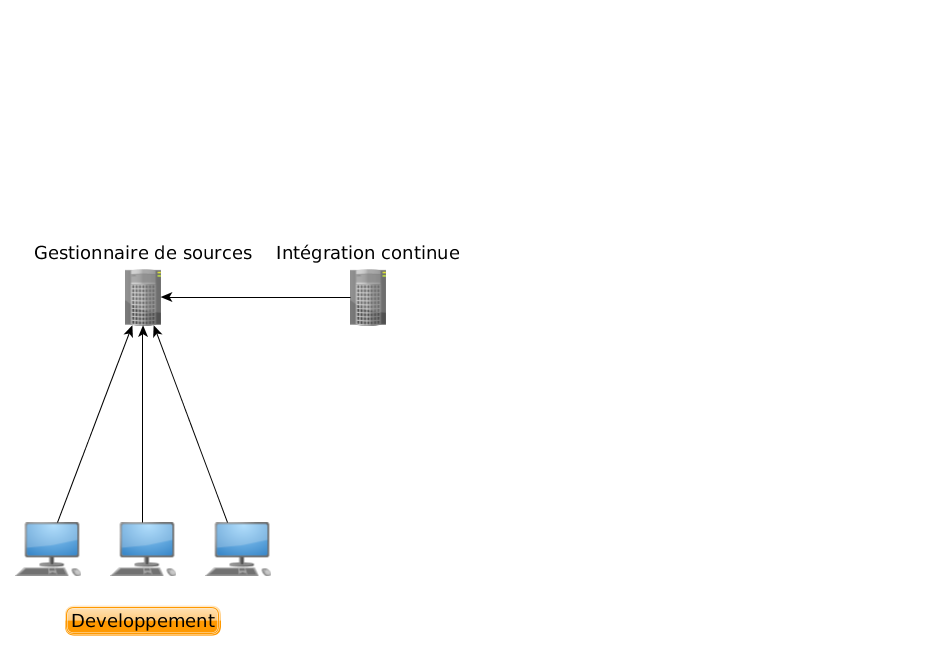
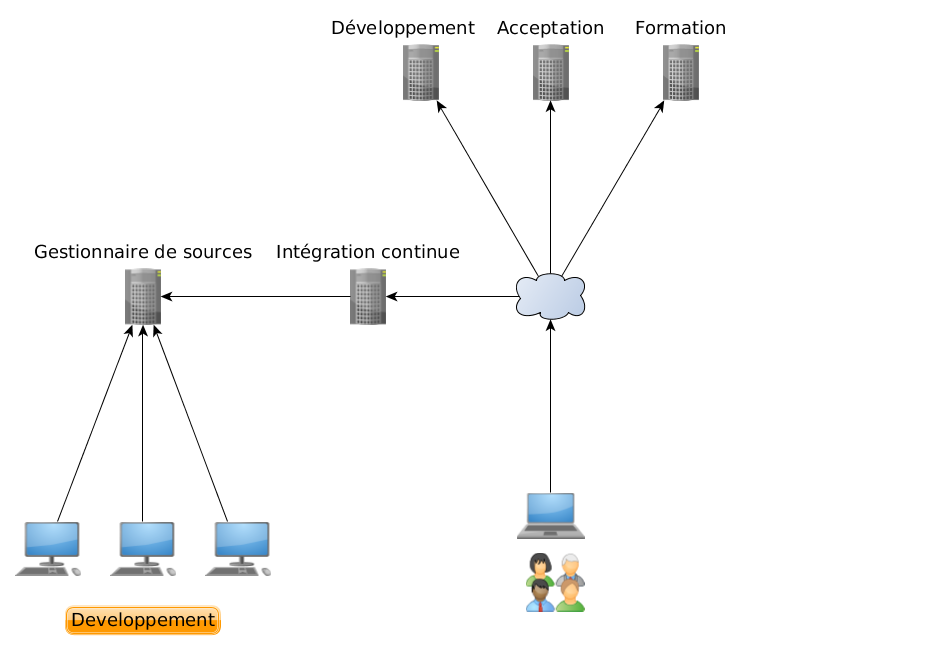
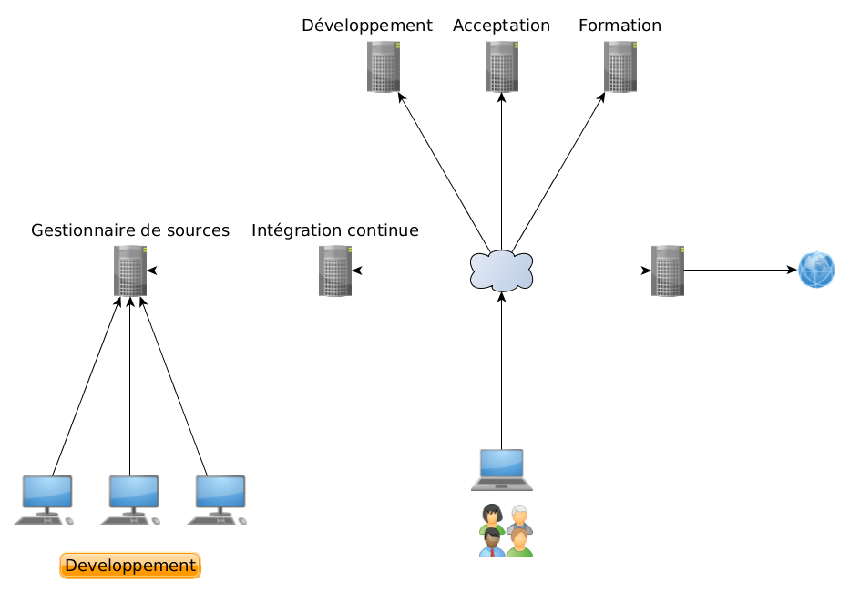
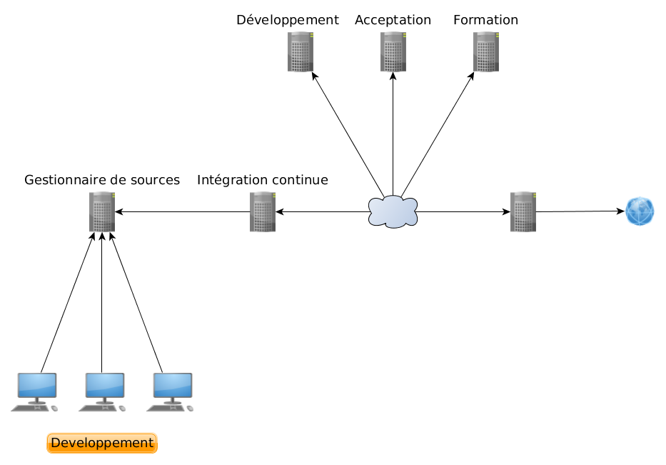

@jni_viens
@jni_viens #ElapseAT14
@jni_viens  jni-
jni-
Est-ce tout simplement "cowboy"?
On s'est donné les moyens de faire de la livraison continue!




Pourquoi?
Tout doit être dans le contrôle de source
Des serveurs, des environnements de développement, etc.
Ou les migrations nécessaires
Ça semble évident, mais absolument tout doit y être : cronjob, services, etc.
Configuration des environnements
La pire gaffe à faire!
Un conteneur pour tout le monde
Les tests doivent pouvoir s'exécuter facilement
Pour faire passer le test X tu as besoin d'installer Y... fait juste l'ignorer.
Qui provient du même environnement que la prod!
Publier un et un seul paquet pour les installations
Une nouvelle image pour chaque version!
Merge fréquents et résultat cohérent
Un déploiement simple et rapide
Ne faites pas l'erreur de vous dire "c'est trop simple pour l'instant"
Et réduisez votre "bus factor"
Déploiement sans interruption
Augmente souvent la résilience du produit
Est-ce tout simplement "cowboy"?
Commencez tranquillement à tout automatiser, ne prennez pas de trop grosses bouchées!
Est-ce nécessaire d'avoir aucune interruption?
Arrêtons d'être le goulot d'étranglement
Il existe des outils pour .NET, java, etc.
Malheureusement, on devra se reprendre!